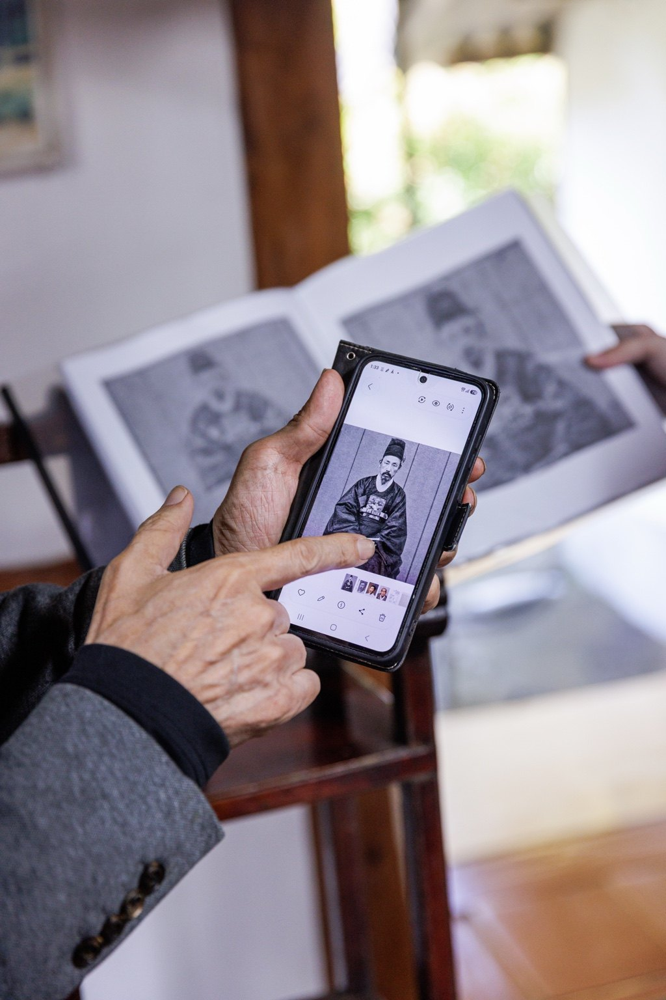

Why He Stayed Two Weeks — Hiding in Hampyeong, 1898
The Lee Dong-beom Family of Hampyeong: A 128-Year Bond | Part 2
[EN] English edition · Translated from the Korean original · 한국어 원문
In Part 1, I introduced the bond between the "Jinsa Lee of Hampyeong" who appears in Baekbeom Ilji and my great-great-grandfather, Seok-am Lee Dong-beom.
This time I would like to go a little further back. In 1898 the young Kim Gu, having escaped from Incheon Prison, stayed at a house in Hampyeong, South Jeolla Province. At first he meant to stay only one night. But that one night turned into two weeks. What was there in that house?
1. A Young Man on the Run
The Kim Gu of 1898 was not yet the leader of the Provisional Government of the Republic of Korea whom we would later remember. He was a young man who had escaped from Incheon Prison and had to stay hidden. While wandering through the three southern provinces, Kim Gu arrived in Hampyeong, South Jeolla Province, and sought out the house of "Jinsa Lee." The house that appears in Baekbeom Ilji is, according to family tradition, the home of my great-great-grandfather Seok-am Lee Dong-beom, introduced in Part 1.
Linking the record of "Jinsa Lee" in Baekbeom Ilji to the identity of Lee Dong-beom, however, requires examining contemporary sources, later survey records, and family tradition together. I believe that confirming historical fact begins with exactly this kind of distinction.
2. One Night Became Two Weeks
What is especially striking in Baekbeom Ilji is its account of the family's household customs. Kim Gu had not gone there intending to stay long. But he was deeply moved to see the master of the house treat host and guest without distinction, and the household receive a guest with such care. Kim Gu judged that this atmosphere came from the character of the master of the house.
In the end, when Kim Gu tried to leave after one night, the master of the house persuaded him to stay, and, touched by that sincerity, he remained for about two weeks. Every time I read this passage, I find myself thinking: how long can the consideration one person shows another be remembered? And can it be passed down to descendants for more than a century?
3. The Hexagonal Pavilion, the Dugout, and the Attic
There are spaces that always come up in accounts of Kim Gu's stay in Hampyeong: a hexagonal pavilion (yukmojeong), an earthen dugout, and the attic room of the inner quarters. These spaces must be examined in light of both the relevant passages of Baekbeom Ilji and our family tradition. According to the story handed down in our family, Kim Gu needed a place to stay out of sight at the time, and the household made room for this. But one important distinction is needed here.
The spaces said to have been used for hiding in 1898 are not necessarily the same as the buildings standing today. The original hexagonal pavilion is known to no longer exist, and the exact location and survival of the dugout, as well as the construction history of the inner quarters and the attic, require further research. What clues the main building of the head family house standing today offers in tracing this history is examined separately in Part 4.

4. My Father's Memories
In the Kim Koo Museum & Library interview introduced in Part 1, my father also told stories connected to this house.

I too grew up hearing those stories, but this time I looked more carefully at which parts can be confirmed in records and which remain as family memory. Newspapers explain a person's life, genealogies a family line, and architectural surveys a building's history, but no single one of them proves every fact on its own.

5. The Meaning of Two Weeks
Kim Gu later became a major figure in modern Korean history. But when he stayed with the Lee Dong-beom family in Hampyeong in 1898, he was a young man wandering the roads to escape danger. The hospitality that gave that young man a night's food and lodging, and that persuaded him to stay longer when he tried to leave, remains recorded in Baekbeom Ilji. This may be why our family has treasured this story to this day.
History is not made only of the deeds of great figures. The choices of the people who stood beside those figures in difficult times are also part of history. We intend to keep searching for the traces of those choices in documents and in places. In Part 3, I will tell the story of 1946, nearly half a century later, when Kim Gu tried to find the house of his old benefactor once again.
Official interview, Kim Koo Museum & Library [Korean]
Next · Previous
- Part 3 (next): The 1946 Reunion and Gwangmyeong — A Bond Kim Gu Sought Out Again https://lsaru23-ai.github.io/hp-db-archive/en/post3.html
- Part 1: Who Was "Jinsa Lee"? — Kim Gu and the Lee Dong-beom Family of Hampyeong https://lsaru23-ai.github.io/hp-db-archive/en/post1.html
Main references
[1] Baekbeom Ilji, records concerning the 1898 stay in Hampyeong.
[2] Maeil Sinbo, July 8, 1917, profile of Lee Dong-beom.
[3] Hampyeong Lee Clan Comprehensive Genealogy (Hampyeong Issi Daedongbo).
[4] Materials held by the Lee Dong-beom family and oral accounts of descendants.
Facts recorded directly in sources and family tradition are described separately; the exact construction history of the buildings is a subject for further research.
This English edition is a translation of the Korean historical archive. The Korean original remains the authoritative version. Documentary evidence, family recollections, and unresolved questions are distinguished throughout.
Chinese characters given in parentheses after names and source titles are supplied for identification; they are not quotations from the original documents unless shown in quotation marks.